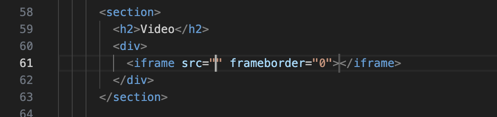
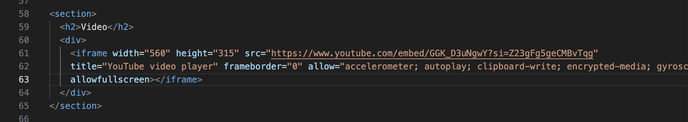
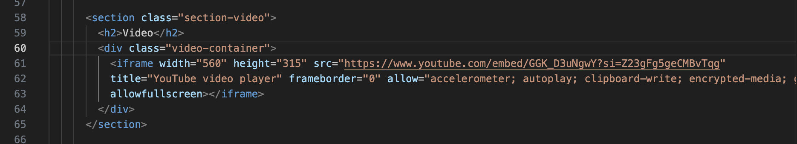
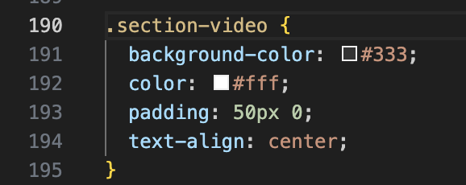

Creating three tags: section, div, and h2. Adding a title to the heading
We add the iframe tag to embed a YouTube video, where src specifies the path or link to the resource, and frameborder="0" defines the absence of a frame around the iframe.
iframe, designed for playing YouTube videos on a web page. The code specifies the dimensions of the video player, the link to a specific YouTube video, and permissions for various features such as automatic playback and fullscreen mode. The attribute frameborder="0" indicates the absence of a frame around the player.
Now we are adding classes.
This CSS code defines styles for elements with the class `.section-video`.
The property `background-color: #333;` sets a dark background color for these elements.
The `color: #fff;` property determines a white text color inside these elements.
Additionally, a padding of 50 pixels is added both vertically and horizontally with `padding: 50px 0;`.
Finally, `text-align: center;` aligns the text at the center of these elements.
position: relative; sets a relative positioning to allow other elements to be positioned relative to it.
width: 80%; establishes the container's width as 80% of its parent element's width.
margin: 0 auto; creates automatic top and bottom margins, horizontally centering the container.
overflow: hidden; ensures that the container hides any excess content that may extend beyond its boundaries.
padding-bottom: 56.25%; sets a bottom internal padding calculated to create proportionate space for embedding a video with a high aspect ratio.
position: absolute;: Sets absolute positioning for the iframe, allowing it to be taken out of the document flow and precisely positioned.
top: 0; and left: 0;: Places the iframe at the top-left corner of its parent element (.video-container).
width: 100%; and height: 100%;: Stretches the iframe to the full size of its parent container, occupying it entirely.